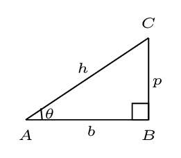
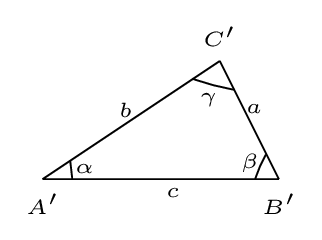
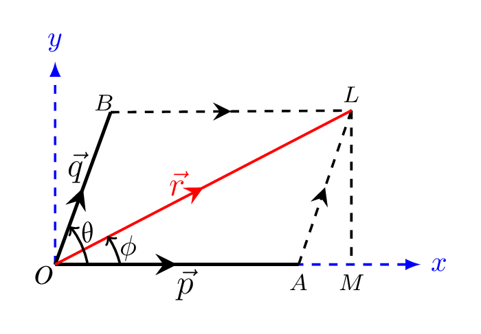

Appendix A Mathematical Relations
- Algebric:
- Logerithmic Formulae: A common logerithim is defined for a logerithm of base 10 and natural logerithm is defined for a base e. If \(\log a=x,\) then \(a=10^{x},\) and if \(\ln a=x,\) then \(a=e^{x}\text{,}\) also\begin{equation*} \log m+\log n = \log mn; \end{equation*}\begin{equation*} \log m-\log n = \log\frac{m}{n}, \end{equation*}\begin{equation*} \log m^{n}= n \log m. \end{equation*}Similarly we can obtain the relations for natural log (ln).
- Quadratic Formula: If\begin{equation*} ax^{2}+bx+c=0, \end{equation*}then the root of quadratic equation is given by\begin{equation*} x=\frac{-b \pm \sqrt{b^{2}-4 a c}}{2 a} \end{equation*}
- Geometric Formulae:
- Circumference of a circle of circle of radius r, \(C= 2\pi r\text{;}\)
- Area of a circle of circle of radius r, \(A = \pi r^{2};\)
- Volume of a sphere of radius r, \(V=\frac{4}{3}\pi r^{3};\)
- Surface area of a sphere of radius r, \(A=4\pi r^{2};\)
- Volume area of a cylinder of radius r and height h, \(V=\pi r^{2}h;\)
- Cylindrical surface area of a cylinder of radius r and height h, \(S=2\pi r h\)
- Congruent Triangles: In two triangles if corresponding SAS (side angle side) or SSS (side side side) are equal then triangles are congruent.
- Similar Triangles: If corresponding AAA (angle angle angle) of two triangles are equal then the triangles are called similar triangles. In that case the ratio of corresponding sides of these triangles are equal.
- Trigonometric Identities: in right angled triangle \(\vartriangle ABC,\)
- \begin{equation*} h^{2}=p^{2}+b^{2} \end{equation*}
- \begin{equation*} \sin\theta=\frac{p}{h} \end{equation*}\begin{equation*} \cos\theta=\frac{b}{h} \end{equation*}\begin{equation*} \tan\theta=\frac{p}{b} \end{equation*}
- \begin{equation*} \sin\theta \csc\theta=1; \end{equation*}\begin{equation*} \cos\theta\sec\theta=1; \end{equation*}\begin{equation*} \tan\theta\cot\theta=1; \end{equation*}\begin{equation*} \frac{\sin\theta}{\cos\theta}=\tan\theta \end{equation*}
- \begin{equation*} \sin2\theta = 2\sin\theta\cos\theta; \end{equation*}\begin{equation*} \cos2\theta = \cos^{2}\theta-\sin^{2}\theta=2\cos^{2}\theta-1=1-2\sin^{2}\theta. \end{equation*}If \(2\theta = \alpha,\) then\begin{equation*} \sin\alpha=2\sin\frac{\alpha}{2}\cdot\cos\frac{\alpha}{2} \end{equation*}\begin{equation*} \cos\alpha=1-2\sin^{2}\frac{\alpha}{2} = 2\cos^{2}\frac{\alpha}{2}-1. \end{equation*}
- \begin{equation*} \sin(-\theta) = -\sin\theta; \end{equation*}\begin{equation*} \cos(-\theta) = \cos\theta; \end{equation*}\begin{equation*} \sin(\theta\pm \frac{\pi}{2}) = \pm \cos\theta; \end{equation*}\begin{equation*} \cos(\theta\pm \frac{\pi}{2}) = \mp \sin\theta. \end{equation*}
- \begin{equation*} \sin(\alpha\pm\beta)=\sin\alpha\cos\beta\pm\cos\alpha\sin\beta; \end{equation*}\begin{equation*} \cos(\alpha\pm\beta)=\cos\alpha\cos\beta\mp\sin\alpha\sin\beta \end{equation*}
- \begin{equation*} 2\sin \alpha\cdot\sin\beta = \cos(\alpha-\beta) - \cos(\alpha+\beta); \end{equation*}\begin{equation*} 2\cos \alpha\cdot\cos\beta = \cos(\alpha+\beta) + \cos(\alpha-\beta) \end{equation*}
- \begin{equation*} 2\sin \alpha\cdot\cos\beta = \sin(\alpha+\beta) + \sin(\alpha-\beta) \end{equation*}\begin{equation*} 2\cos \alpha\cdot\sin\beta = \sin(\alpha+\beta) - \sin(\alpha-\beta) \end{equation*}
- \begin{equation*} \sin\alpha+\sin\beta = 2\sin\frac{\alpha+\beta}{2}\cos\frac{\alpha-\beta}{2}; \end{equation*}\begin{equation*} \cos\alpha+\cos\beta = 2\cos\frac{\alpha+\beta}{2}\cos\frac{\alpha-\beta}{2} \end{equation*}
- Trigonometric Identities: in any \(\vartriangle A' B' C'\) with sides \(a, \,b,\) and \(c\) and angles \(\alpha,\,\beta,\) and \(\gamma\)
- Law of sines:\begin{equation*} \frac{\sin\alpha}{a}=\frac{\sin\beta}{b}=\frac{\sin\gamma}{c} \end{equation*}
- Law of cosines:\begin{equation*} c^{2}=a^{2}+b^{2}-2ab\cos\gamma \end{equation*}
- Binomial Theorem:\begin{equation*} (a+b)^{n} = a^{n}+na^{n-1}b+\frac{n(n-1)a^{n-2}b^{2}}{2!}+\frac{n(n-1)(n-2)a^{n-3}b^{3}}{3!}+\cdots \end{equation*}
- Power Series:\begin{equation*} (1+x)^{n} =1+nx+\frac{n(n-1)x^{2}}{2!}+\frac{n(n-1)(n-2)x^{3}}{3!}+\cdots \quad (|x| \lt 1) \end{equation*}\begin{equation*} e^{x}=1+x+\frac{x^{2}}{2!}+\frac{x^{3}}{3!}+\cdots \quad (\forall x) \end{equation*}\begin{equation*} \ln(1+x)=x-\frac{x^{2}}{2}+\frac{x^{3}}{3}-\frac{x^{4}}{4}+\cdots \quad (|x| \lt 1) \end{equation*}\begin{equation*} \sin x= x-\frac{x^{3}}{3!}+\frac{x^{5}}{5!}-\frac{x^{7}}{7!}+\cdots \quad (\forall x) \end{equation*}\begin{equation*} \cos x= 1-\frac{x^{2}}{2!}+\frac{x^{4}}{4!}-\frac{x^{6}}{6!}+\cdots \quad (\forall x) \end{equation*}\begin{equation*} \tan x= x+\frac{x^{3}}{3}+\frac{2x^{5}}{15}+\frac{17x^{7}}{315}+\cdots \quad (|x| \lt \frac{\pi}{2}) \end{equation*}
- Calculus:\begin{equation*} \lim_{x \to 0} \frac{\sin x}{x} = 1; \end{equation*}\begin{equation*} \lim_{x \to 0} \cos x = 1 \end{equation*}
- Derivatives:\begin{equation*} \frac{\,d}{\,dx}x^{n}=nx^{n-1}; \end{equation*}\begin{equation*} \frac{\,d}{\,dx}\ln ax= \frac{1}{x}; \end{equation*}\begin{equation*} \frac{\,d}{\,dx}e^{ax}=ae^{ax}; \end{equation*}\begin{equation*} \frac{\,d}{\,dx}\sin ax = a\cos ax; \end{equation*}\begin{equation*} \frac{\,d}{\,dx}\cos ax = -a\sin ax; \end{equation*}\begin{equation*} \frac{\,d}{\,dx}\left(\tan x\right) = \sec^{2} x; \end{equation*}\begin{equation*} \frac{\,d}{\,dx}\left(\cot x \right) = - \csc^{2} x \end{equation*}\begin{equation*} \frac{\,d}{\,dx}\left(\sec x \right) = \sec x \tan x; \end{equation*}\begin{equation*} \frac{\,d}{\,dx}\left(\csc x \right) = - \csc x \cot x \end{equation*}
- Integrals:\begin{equation*} \int x^{n}\,dx= \frac{x^{n+1}}{n+1}\quad (n\neq-1); \end{equation*}\begin{equation*} \int \frac{1}{x}\,dx=\ln x; \end{equation*}\begin{equation*} \int e^{ax}\,dx = \frac{e^{ax}}{a}; \end{equation*}\begin{equation*} \int \sin ax \,dx= -\frac{\cos ax}{a}; \end{equation*}\begin{equation*} \int \cos ax\,dx=\frac{\sin ax}{a}; \end{equation*}\begin{equation*} \int \frac{\,dx}{\sqrt{a^{2}-x^{2}}}=\arcsin\frac{x}{a} \end{equation*}\begin{equation*} \int \frac{\,dx}{\sqrt{x^{2}+a^{2}}}=\ln(x+\sqrt{x^{2}+a^{2}}); \end{equation*}\begin{equation*} \int \frac{\,dx}{x^{2}+a^{2}}=\frac{1}{a}\arctan\frac{x}{a} \end{equation*}\begin{equation*} \int \frac{\,dx}{\left(x^{2}+a^{2}\right)^{3/2}}=\frac{1}{a^{2}}\frac{x}{\sqrt{x^{2}+a^{2}}}; \end{equation*}\begin{equation*} \int \frac{x\,dx}{\left(x^{2}+a^{2}\right)^{3/2}}=-\frac{1}{\sqrt{x^{2}+a^{2}}} \end{equation*}
- Vectors: Draw a rectangle having adjacent sides as \(\vec{a}\) and \(\vec{b}.\) Draw perpendicular on x-axis from point L as shown in figure below. The diagonal of rectangle represents resultant of the vectors \(\vec{a}\) and \(\vec{b}\text{.}\) Now\begin{equation*} r =\sqrt{LM^{2}+OM^{2}}=\sqrt{LM^{2}+\left(OA+AM\right)^{2}} \end{equation*}\begin{equation*} \text{but,}\quad AM=AL\cos\theta; \end{equation*}and\begin{equation*} LM=AL\sin\theta \end{equation*}\begin{equation*} \text{or,}\quad AM=q\cos\theta; \end{equation*}and\begin{equation*} LM=q\sin\theta \end{equation*}\begin{equation*} \therefore\quad r=\sqrt{q^{2}\sin^{2}\theta+\left(p+q\cos\theta\right)^{2}} = \sqrt{p^{2}+q^{2}+2pq\cos\theta} \end{equation*}\begin{equation*} \tan\phi=\frac{LM}{OM} \end{equation*}\begin{equation*} \Rightarrow \quad \phi=tan^{-1}\left( \frac{q\sin\theta}{p+q\cos\theta}\right) \end{equation*}